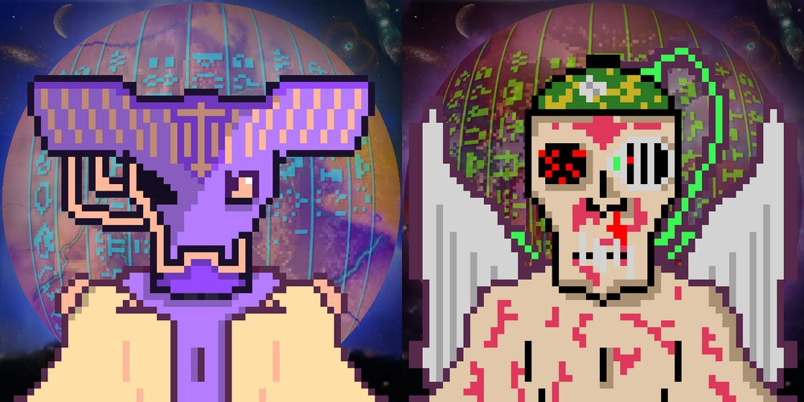

Purpose
So what are the benefits of being a member of the DaemonDAO?
- Free airdrops of all future Daemon collections, or some other tangible benefit.
- Voting rights - guide the future of the project and the use of treasury assets.
- Access to a members-only chat in the BitDaemons Discord server

blah blah
After the initial Precursor detection, the Daemon
Science Directorate (DSD) was founded in order to monitor BitDaemon activity.
Treasury
Our research team made preparations to observe the BitDaemon Mass-Transit Event (MTE),
but we weren’t the only ones watching: shortly after the event began (December 21st 2021),
a malevolent force of unknown origin reached out, attacking both the arriving
BitDaemons and the bridge connection. After a sustained campaign of assault, the MTE was prematurely halted on January 17th 2022.

Of the thousand-strong horde, only 345 BitDaemons successfully transited,
now residing safely in the care of the DaemonDAO on the Fantom blockchain.